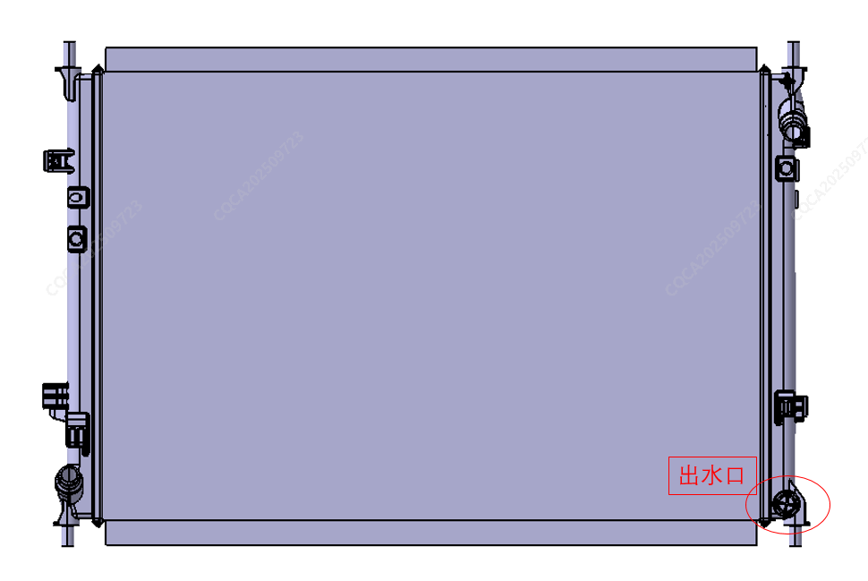

При ремонте связанных с системой охлаждения компонентов необходимо предварительно слить охлаждающую жидкость; при сливе охлаждающей жидкости обязательно обеспечить полный слив системы во избежание разбрызгивания на другие Компонент при демонтаже.
Точки слива охлаждающей жидкости указаны на рисунке ниже:
Открытие крышки расширительного бачка контура охлаждения: облегчает слив охлаждающей жидкости из системы;
Расположение выпускного отверстия радиатора: для слива охлаждающей жидкости контура охлаждения;

Открыть крышку расширительного бачка, медленно залить охлаждающую жидкость в заливное отверстие до линии MAX;
Нажать на большом дисплее для перехода в интерфейс управления кондиционером, если в течение 5 секунд непрерывно фиксируется цикличное срабатывание следующих кнопок, происходит переход в режим заправки: режим обдува — режим обдува — рециркуляция (внутренняя/внешняя) — рециркуляция (внутренняя/внешняя) — режим обдува — режим обдува;
Комплектация Low-spec: 2.75 ± 0.2 L
Комплектация High-spec: 7.5 ± 0.2 L
Заправку охлаждающей жидкости следует производить с помощью оборудования для вакуумирования. При наличии ограничений по условиям допускается ручная заправка охлаждающей жидкости в расширительный бачок. После завершения заправки выполнить следующие Шаги для удаления воздуха из контура;
Залить охлаждающую жидкость до линии MAX на бачке;
После перехода в режим заправки в интерфейсе настроек кондиционера на большом дисплее (см. заправку охлаждающей жидкости) выполнить следующие операции: если в течение 5 секунд непрерывно фиксируется цикличное срабатывание следующих кнопок, происходит переход в режим удаления воздуха: рециркуляция (внутренняя/внешняя) — режим обдува — рециркуляция (внутренняя/внешняя) — режим обдува — рециркуляция (внутренняя/внешняя) — режим обдува для перехода в режим удаления воздуха (длительностью не менее 30 min);
Доливать охлаждающую жидкость во время работы водяного насоса, когда уровень жидкости перестанет падать, можно остановить работу водяного насоса и закрыть режим заправки;
Долить охлаждающую жидкость так, чтобы уровень находился в пределах линии MAX ± 5 mm, удаление воздуха завершено, затянуть крышку расширительного бачка, снова проверить уровень жидкости, если уровень стабилен, заправка завершена.